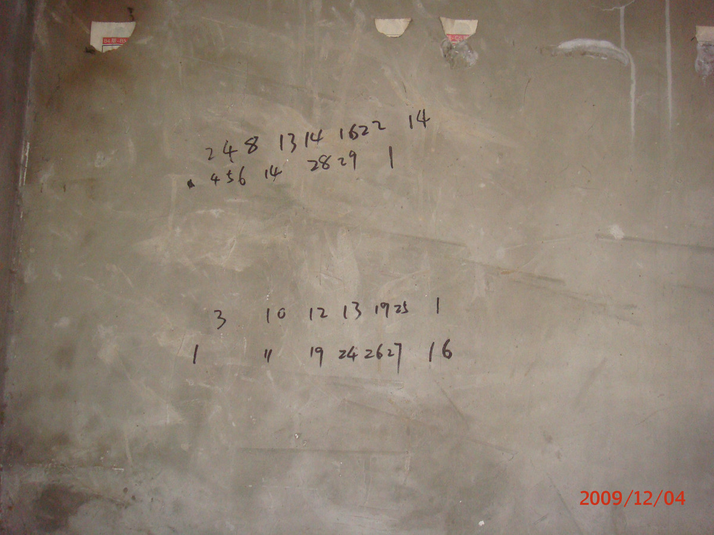
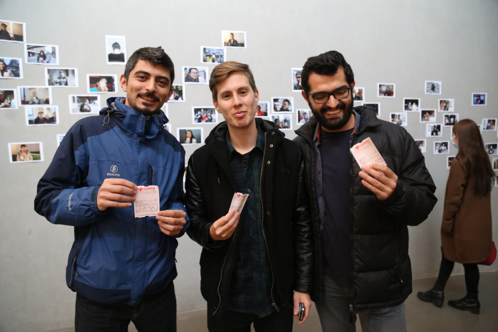
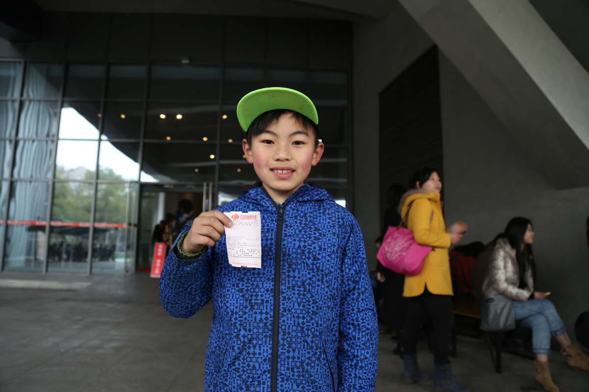
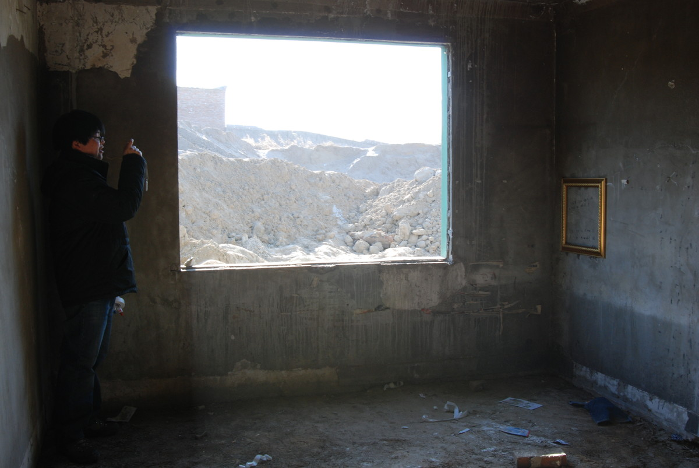

我有一个梦想 | I HAVE A DREAM

行为，图片记录，尺寸可变，2009
Action, Photographs, Variable, 2009
2009年冬天，我在北京郊区一间废弃的房间里找到一组彩票号码，后来按照这组号码我买了很多彩票送给了观众。
In the winter of 2009, I occasionally found a set of welfare lottery numbers in an abandoned room located in the outskirts of Beijing. Afterwards I bought many lottery tickets containing these numbers and gave them to the attending audience.

南京艺术学院美术馆，南京
Art Museum of Nanjing University of the Arts, Nanjing

南京艺术学院美术馆，南京
Art Museum of Nanjing University of the Arts, Nanjing

老夏沙场，北京
Laoxia Sand Factory, Beijing